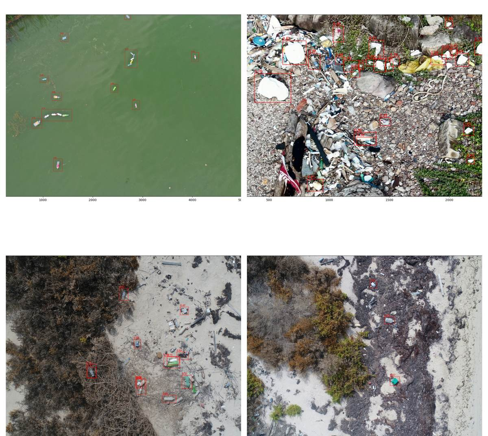
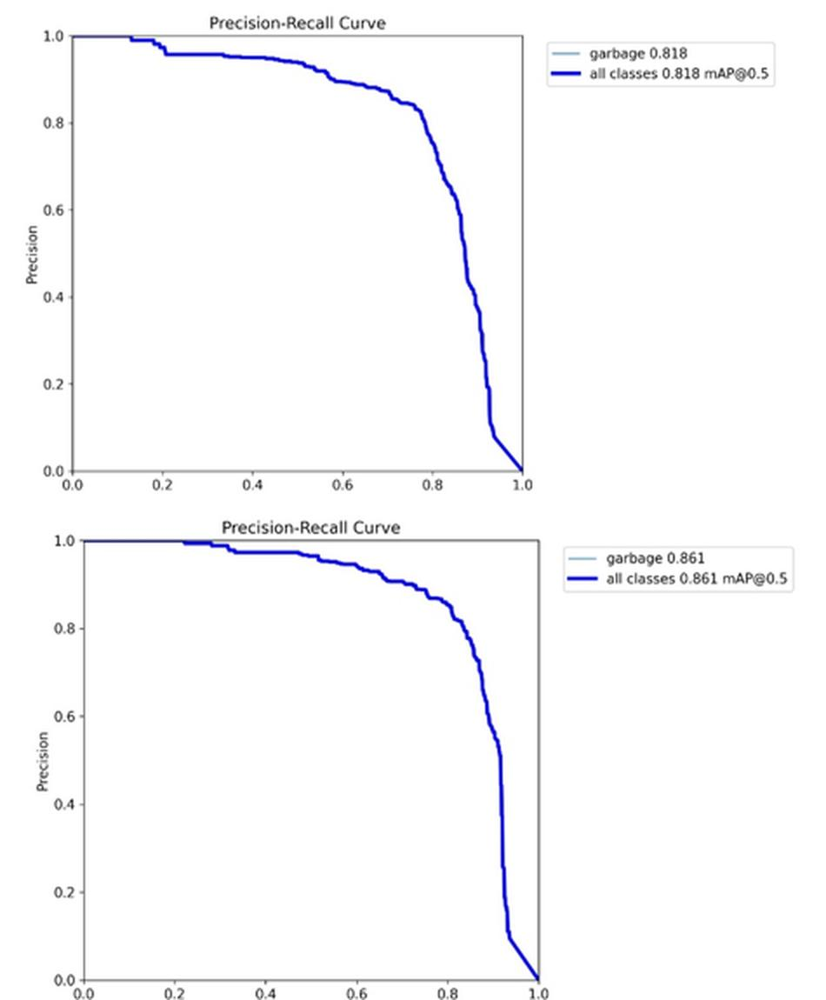

Beach trash from the air
problem
plastic on shorelines is hard to survey on foot; drones see a lot of coast, but something has to find the debris in the images.
what I built
- a benchmark of five YOLOv8 variants (n, s, m, l, x) with and without a Wise-IoU loss
- hyperparameter tuning and custom augmentation on a dataset combining two UAV sources (772 beach images and 40 river images), all labelled as one class, garbage
- offline augmentation of 40 annotated images into 120 more (blur, rotation, scale), for 892 images split 636 / 128 / 128 into train, validation and test
results
- YOLOv8m went from 81.7% to 86.1% mAP@50
- Wise-IoU hurt the largest models
- YOLOv8l and YOLOv8x lost a lot of precision with Wise-IoU, which the paper puts down to computational limits
- hyperparameter tuning (rotation 45 degrees, flips 0.5 and 0.6, MixUp 0.05) lifted YOLOv8s from 80.8% to 83.5% mAP@50

